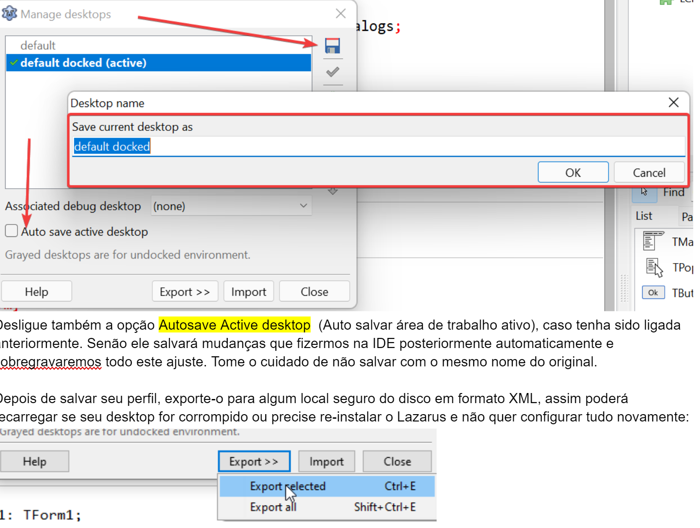
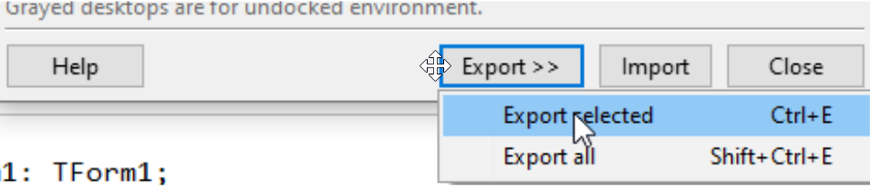

Não é obrigatório, mas recomendo que a cada intervenção nos aspectos da IDE como posição, docagem, ancoragem…. você salve sua área de trabalho. Senão, ao fechá-la acidentalmente terá de repetir todo o processo.
Ao salvar sua área de trabalho com um nome qualquer, você garante que se algo der errado você possa restaurá-la para deixar sua IDE como estava quando a salvou.
Com tudo funcionando perfeitamente vá em Tools->Desktop(Ferramentas->Área de Trabalho) e salve seu desktop(área de trabalho) com um nome de arquivo (formato xml) que poderá ser usado mais tarde em futuras instalações:

Desligue também a opção Autosave Active desktop (Auto salvar área de trabalho ativo), caso tenha sido ligada anteriormente. Senão ele salvará mudanças que fizermos na IDE posteriormente automaticamente e sobregravaremos todo este ajuste.
Tome o cuidado de não salvar com o mesmo nome do original.
Depois de salvar seu perfil, exporte-o para algum local seguro do disco em formato XML, assim poderá recarregar se seu desktop for corrompido ou precise re-instalar o Lazarus e não quer configurar tudo novamente:

Crie desktops com nomes diferentes quando estiver em setups diferentes, por exemplo, em casa tenho apenas 1 monitor então é sábio ter um desktop com ajustes de docagens chamado “casa”. Mas no trabalho tenho dois monitores, então ajustar as docagens para um jeito mais confortável e chamá-lo de “trabalho”. E se for um sortudo e trabalhar com um monitor superwide então um outro desktop com o nome “superwide” e assim sucessivamente.